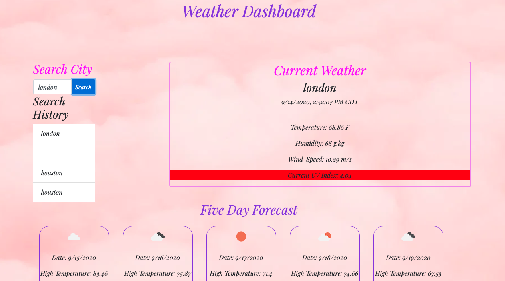
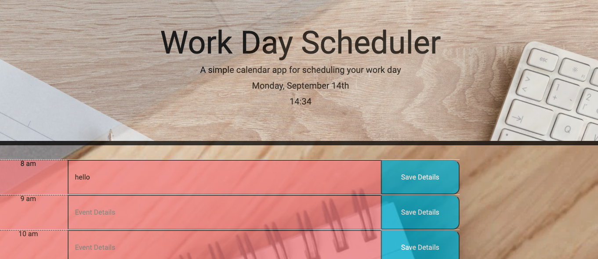
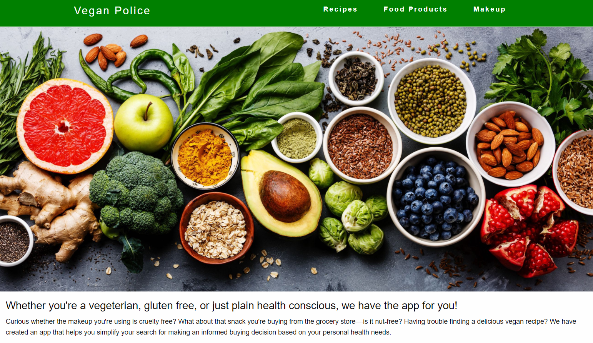

Portfolio
Weather Dashboard
Utilizing the Open Weather API, the application generates the current weather as well as the 5 day forecast for the city the user inputs.
ViewWork Day Scheduler
The application allows the user to add events and event details within the scheduler time table. The events are color-coded according to whether the event is in the past,present, or future and then this data is saved to local storage.
ViewVegan Police Application
Utilizing third-party API's the application allows a user to search for food reciepes, products, and cosemetics that meet their dietary and allergenic restrictions.
View